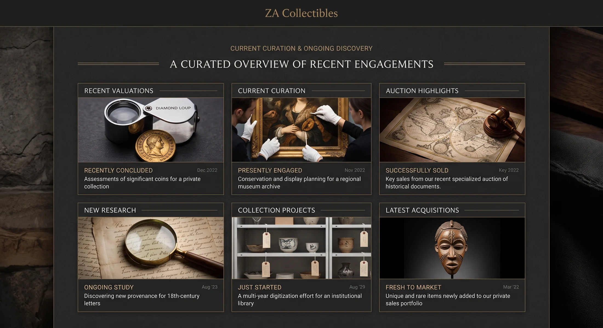

ZA Collectibles / Disciplines
The object tells you
how to look at it.
A coin edge, a gemstone inclusion, a stamp cancellation and a sword hilt are different kinds of evidence. Each collecting field deserves its own visual language and its own questions.

Edges, strikes, varieties and the marks of manufacture.
Ancient, world, South African, bullion, medals, tokens and graded or raw coins.

Colour is only the beginning.
Certification, treatment, origin, inclusions and setting.

Objects that sit inside larger histories.
Orders, medals, badges, documents, field material and provenance.

Paper, route, cancellation and memory.
Stamps, covers, thematic collections and inherited albums.

Movement, case, dial and originality.

Context can matter more than category.

LEGO, models and selected modern collecting fields.
Condition, completeness, edition, retirement and collector demand.
Something unusual?
Good.
Some of the most interesting work starts with an object that does not fit a neat menu category. Send photographs and context rather than trying to classify it yourself.
Show us the object →Cross-disciplinary work
The interesting part often sits between categories.
A military watch is horology and history. A medal group can be object, document and biography at once. Ancient jewellery crosses material, archaeology and decorative art. The site should make those relationships easy to follow rather than forcing everything into a box.
See recent work →